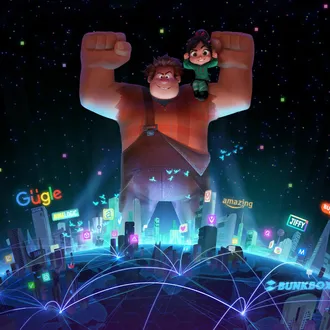

About Raplh
Featuring the voices of John C. Reilly, Sarah Silverman, Jack McBrayer, and Jane Lynch, the film tells the story of the eponymous arcade game villain who rebels against his "bad-guy" role and dreams of becoming a hero. Wreck-It Ralph premiered at the El Capitan Theatre in Los Angeles on October 29, 2012,[7] and went into general release on November 2. The film was a critical and commercial success, grossing $496 million worldwide against a $165 million budget and winning the Annie Award for Best Animated Feature, as well as receiving nominations for the Golden Globe and Academy Award for Best Animated Feature, losing both awards to Brave.[8][9][10] A sequel, Ralph Breaks the Internet, was released on November 21, 2018.
Movie Bio
Raplh Stats
- Big Hands
- bad ass
- Trying to be good
His Friends
He has good friends. Click to read more